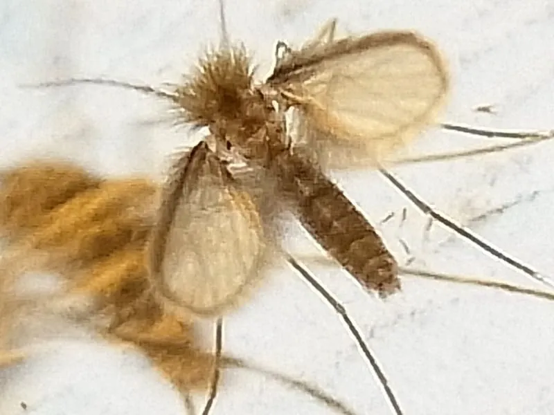

昆虫 · 动物界
中华白蛉 Phlebotomus chinensis

体型细小的吸血昆虫，多在黄昏活动，是黑热病（内脏利什曼病）的传播媒介，在中国中北部曾有分布。
- 分类
- 门节肢动物门纲昆虫纲目双翅目科白蛉科属白蛉属
- 栖息环境
- 阴暗潮湿的洞穴、墙缝、畜舍和垃圾堆，黄昏和夜间活动
- 地理分布
- 中国中北部及亚洲部分地区，多见于有黑热病流行的山区和丘陵地带
- 保护级别
- 暂无评估
物种志
中华白蛉成虫体长仅 2–3 mm，体色灰黄，体表密布细毛，翅狭长，停息时两翅向上呈 V 字形斜立，飞行时几乎没有声音。复眼黑褐色，触角细长。
中华白蛉分布于中国中北部及亚洲部分地区，栖息于阴暗潮湿的洞穴、墙缝、畜舍和垃圾堆中。雌蛉吸血，多在黄昏和夜间活动，雄蛉不吸血。中华白蛉是黑热病（内脏利什曼病）的重要传播媒介，病原体为杜氏利什曼原虫，病犬是主要传染源之一。患者会出现长期发热、肝脾肿大、贫血和消瘦等症状，若不及时治疗可能危及生命。防治上主要依靠杀虫剂滞留喷洒、环境整治和病例监测。目前它没有IUCN 的正式评估，中国未将其列入国家重点保护野生动物名录。
形态与习性
- 食性雌蛉吸血，雄蛉不吸血
- 体长仅 2–3 mm
- 活动时间多在黄昏和夜间活动
- 栖息地洞穴、墙缝、畜舍和垃圾堆等阴暗潮湿处
- 传播疾病黑热病（内脏利什曼病）的重要传播媒介
- 防治杀虫剂滞留喷漆、环境整治和病例监测
趣味知识
- 白蛉只有蚊子的一半大小，停息时翅膀呈 V 字形。
- 它飞行时几乎没有声音，常在黄昏悄悄吸血。
- 中华白蛉是黑热病的传播媒介，病犬是重要的传染源。